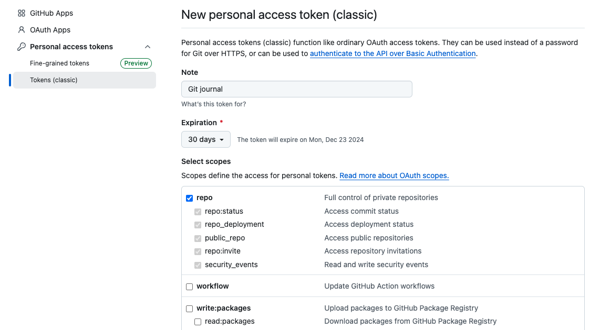

Git journal
Cet outil vous permet de générer un journal de travail basé sur le log d'un repo Git
Voici comment l'utiliser :
-
Appliquer la règle suivante : toute activité laisse une trace. Cela
est également vrai pour des moments d'apprentissage ou d'écoute :
- Si on a codé, la trace c'est bien sur le code
-
Si on a fait de la documentation, la trace est une nouvelle version du rapport ou de toute autre document
- Si on a assisté à une réunion, la trace, c'est le procès-verbal de la réunion
-
Si on a écouté une explication, visionné un tutoriel ou lu un article ou une documentation, la trace c'est
les notes qui résument ce qu'on a appris
-
Pour chaque commit Git, vous fournissez les données nécessaires à la construction du journal au moyen de
champs dont la valeur est indiquée entre crochets carrés []. Il y a trois types de champs possibles:
-
La durée (obligatoire). Le temps qu'il vous a fallu pour produire le contenu de ce commit. Il peut être
exprimé en minutes ou en heure et minute. Exemples de valeur possible : [45], [45min], [1h20], [80m]
-
Le status de la tâche (obligatoire). Le format est libre, mais par convention nous n'utilisons que [WIP]
(pour une tâche inachevée) et [DONE].
-
Une date corrective (facultative), pour rattraper une erreur si par exemple on a fait un commit la semaine
précédente et que l'on a oublié de fournir les informations. Exemple : j'ai fait un commit le 12 janvier
2024 dont l'effet est de rajouter un bouton d'aide au gitjournal, mais j'ai oublié de préciser la durée et
le status. Le 15 janvier 2024, je fais un commit vide
git commit --allow-empty -m "feat(gitjournal): Ajouter un bouton d'aide" -m "[30m][DONE][2024-01-15]"
Ce commit aura pour effet de faire apparaître mon travail du 12 janvier au bon endroit dans le journal.
-
Renommez le fichier .config.js.example en
.config.js
-
Générez un Git Personal Access Token (PAT) et placez-le dans
.config.js
Attention: Veillez à ce que votre token aie bien la portée "repo" (voir
image ci-dessous)
-
Optionnellement, vous pouvez configurer dans
.config.js.example un repo qui sera pris par défaut et/ou une
liste de repos avec lesquelles vous travaillez actuellement
- Cliquez sur une des entrées du journal pour atteindre le commit correspondant
- Pour une version PDF, il vous suffit d'"imprimer" cette page
Génération du PAT
